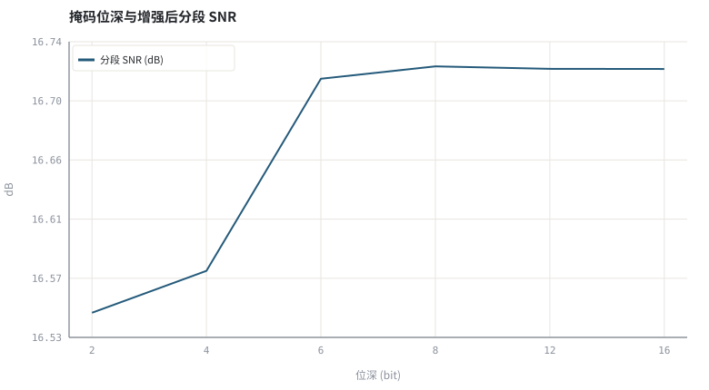
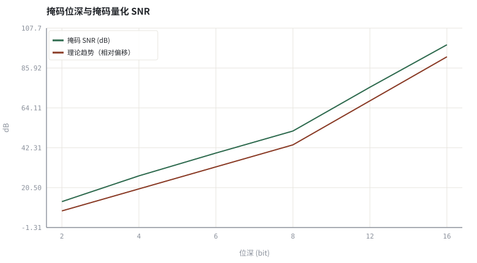

第 29 章量化、剪枝与端侧推理
把浮点模型塞进端侧预算，同时守住「不能听出来」这条底线。
本章位置：第 27 章 · 因果性与流式推理：状态缓存、感受野 与 第 28 章 · 延迟预算与 RTF：实时链路账本 给出状态与时间约束，本章压缩空间与算力；第 30 章 · 泛化、鲁棒性与评测陷阱 讨论分布外泛化，第 31 章 · 结课项目：小型掩码估计器与全链路验证 把全部约束写进结课验收。
量化是给模型的所有数换一把刻度更粗的尺子；校准是先量出这批数到底有多大，再决定尺子的量程。
- 能写出均匀量化的误差模型并估算量化 SNR。
- 能区分训练后量化 PTQ 与量化感知训练 QAT。
- 能量化不同位深对掩码精度与增强质量的影响。
- 能列出端侧部署的完整检查清单。
§知识点地图
每个知识点都配了 1～2 个扩展学习链接；本章完整资源清单见 扩展学习。
| # | 知识点 | 扩展学习 | 状态 |
|---|---|---|---|
| 1 | 均匀量化与步长 | ONNX Runtime ↗ · Quantization (signal processing) ↗ | 正文已覆盖 |
| 2 | int8 与定点 DSP | Quantization (signal processing) ↗ · ONNX Runtime ↗ | 正文已覆盖 |
| 3 | 量化噪声与 SNR | ffmpeg afftdn ↗ · Microsoft DNS Challenge ↗ | 正文已覆盖 |
| 4 | 训练后量化 PTQ | Microsoft DNS Challenge ↗ · SpeechBrain ↗ | 正文已覆盖 |
| 5 | 量化感知训练 QAT | Microsoft DNS Challenge ↗ · SpeechBrain ↗ | 正文已覆盖 |
| 6 | 校准与激活范围 | Quantization (signal processing) ↗ · ONNX Runtime ↗ | 正文已覆盖 |
| 7 | 剪枝与稀疏 | Quantization (signal processing) ↗ · ONNX Runtime ↗ | 正文已覆盖 |
| 8 | 端侧推理检查清单 | Quantization (signal processing) ↗ · ONNX Runtime ↗ | 正文已覆盖 |
§29.1量化就是给每个数重新定一把尺子
q = round(x / Δ)·Δ ，Δ = (x_max − x_min)/(2^b − 1) ，SNR_q ≈ 6.02·b + 1.76 dB
第 02 章 · 采样、量化与时频表示：从 PCM 到 STFT 讨论过 PCM 量化，模型量化是同一件事，只是对象从波形换成权重与激活。对输出在 [0,1] 的掩码/增益，尺子是固定的；对权重则要先统计每层的动态范围（校准），否则少数离群值会把步长撑大、精度全丢。
| 方法 | 何时做 | 需要数据吗 | 特点 |
|---|---|---|---|
| PTQ | 训练完成后 | 少量校准集 | 最快，低比特时掉点明显 |
| QAT | 训练中插入伪量化 | 完整训练集 | 精度最好，训练成本最高 |
| 动态量化 | 推理时按 batch 统计 | 不需要 | 权重定长，激活范围动态 |
| 剪枝 | 训练中或之后 | 可选 | 减少 MACs，但需硬件支持稀疏 |
§29.2端侧部署的检查清单
- 精度：同时报客观指标与主观听测；只报 segSNR 会漏掉量化引入的音乐噪声。
- 算子：确认目标运行时支持所用算子（复数卷积、GRU、因果注意力）。
- 状态：流式状态本身也要量化或保持浮点，否则 第 27 章 · 因果性与流式推理：状态缓存、感受野 的等价性测试会失败。
- 预算：重算 第 28 章 · 延迟预算与 RTF：实时链路账本 的 RTF 与内存带宽，并测最坏单帧耗时；int8 未必等于 4 倍加速。
- 回退：保留一条传统 3A 兜底链路，在模型加载失败或设备过载时降级。
下面把 oracle IRM 掩码均匀量化到 2～16 bit，测量掩码 SNR 与增强后的分段 SNR。这一步隔离了「量化」这一项误差，不含模型训练误差，便于看清位深的边际收益。
§Python 实验
实验 29-1 · 掩码位深扫描：量化噪声、增强质量与模型体积
#!/usr/bin/env python3
# -*- coding: utf-8 -*-
"""把 oracle 掩码量化到 2～16 bit，测量掩码 SNR、分段 SNR 与模型体积估算。
全部语音 / 噪声 / 房间冲激响应均为代码合成信号，仅用于教学演示机制与量级。
"""
from __future__ import annotations
import math
import pathlib
import random
import statistics
import sys
import time
_here = pathlib.Path(__file__).resolve()
for _p in _here.parents:
if (_p / "tools" / "dsp.py").exists():
sys.path.insert(0, str(_p / "tools"))
break
from dsp import (SAMPLE_RATE, fft, hann, stft, istft, magnitude_db, spectrum,
white_noise, tone, chirp, synthetic_speech, rir, convolve,
fft_convolve, delay, clip, normalize_peak, rms, rolling_rms,
smooth, db, energy_db, snr_db, erle_db, seg_snr_db,
scale_align, si_sdr_db, lufs_approx,
write_wav, read_wav, wav_info)
from chart import Chart, heatmap, BLUE, RED, GREEN, AMBER
FIG = _here.parents[1] / "fig"
AUDIO = _here.parents[1] / "audio"
FIG.mkdir(exist_ok=True)
AUDIO.mkdir(exist_ok=True)
random.seed(7)
# ---- 参数区 ----
N = 8000
N_FFT, HOP = 256, 128
NOISE_AMP = 0.035
BITS = (2, 4, 6, 8, 12, 16)
MODEL_PARAMS = 100000
# ---- 计算与作图 ----
rng = random.Random(7)
clean = synthetic_speech(rng, N)
noise = white_noise(rng, N, NOISE_AMP)
noisy = [clean[i] + noise[i] for i in range(N)]
fs, fn = stft(clean, N_FFT, HOP), stft(noise, N_FFT, HOP)
def quantize(v, bits):
levels = 2 ** bits - 1
return round(max(0.0, min(1.0, v)) * levels) / levels
def enhance(bits):
frames = stft(noisy, N_FFT, HOP)
err2, energy, count = 0.0, 0.0, 0
for idx, (ry, iy) in enumerate(frames):
rs, is_ = fs[idx]
rn, in_ = fn[idx]
for k in range(N_FFT):
ms = math.hypot(rs[k], is_[k])
mn = math.hypot(rn[k], in_[k])
g0 = ms / (ms + mn + 1e-9)
g = quantize(g0, bits)
err2 += (g - g0) ** 2
energy += g0 ** 2
count += 1
ry[k] *= g
iy[k] *= g
return istft(frames, N_FFT, HOP, N), 10 * math.log10((energy / count) / (err2 / count + 1e-12))
outputs, segs, mask_snrs = [], [], []
for b in BITS:
out, m = enhance(b)
outputs.append(out)
segs.append(seg_snr_db(clean, scale_align(out, clean)))
mask_snrs.append(m)
c = Chart(FIG / "29-bits.svg", "掩码位深与增强后分段 SNR", xlabel="位深 (bit)", ylabel="dB",
xticks=[(i, "%d" % b) for i, b in enumerate(BITS)])
c.line(range(len(BITS)), segs, BLUE, label="分段 SNR (dB)")
print("位深图:", c.save())
m = Chart(FIG / "29-mask.svg", "掩码位深与掩码量化 SNR", xlabel="位深 (bit)", ylabel="dB",
xticks=[(i, "%d" % b) for i, b in enumerate(BITS)])
m.line(range(len(BITS)), mask_snrs, GREEN, label="掩码 SNR (dB)")
m.line(range(len(BITS)), [6.02 * b + 1.76 - 6.02 for b in BITS], RED, label="理论趋势（相对偏移）")
print("掩码图:", m.save())
write_wav(AUDIO / "29-4bit.wav", normalize_peak(outputs[1]))
write_wav(AUDIO / "29-12bit.wav", normalize_peak(outputs[4]))
sizes = [MODEL_PARAMS * b / 8.0 / 1024.0 for b in BITS]
print("分段 SNR: " + " ".join("%dbit=%.2f" % (b, s) for b, s in zip(BITS, segs)))
print("掩码 SNR: " + " ".join("%dbit=%.2f" % (b, s) for b, s in zip(BITS, mask_snrs)))
print("模型体积(估算, %d 参数): " % MODEL_PARAMS +
" ".join("%dbit=%.1fKB" % (b, z) for b, z in zip(BITS, sizes)))
print("SAMPLE_RATE=%d | 低比特省内存但可能引入音乐噪声" % SAMPLE_RATE)操作：对照两条曲线，找出「再增加位深收益很小」的拐点；试听 4 bit 与 12 bit。 预期与判读：掩码 SNR 随位深约每 bit 提升 6 dB；分段 SNR 在 8 bit 之后趋于饱和，说明继续加位深对最终听感的边际收益很小。低比特的量化台阶可能带来可听的增益跳变。
改参数看趋势：把 NOISE_AMP 提到 0.10，观察低比特与高比特的差距是否拉大。 文件位置：part6/29-quantization/code/29-quantization.py


29-4bit.wav
4 bit 掩码的输出（16 kHz / 16-bit 单声道，代码合成信号，不是真实录音）
29-12bit.wav
12 bit 掩码的输出（16 kHz / 16-bit 单声道，代码合成信号，不是真实录音）
代码块右上角可一键复制；仓库里的 code/*.py 由 tools/extract_code.py 从这些代码块自动抽取。脚本只用标准库、固定 random.seed(7)，运行后写出 fig/*.svg 与 audio/*.wav；批量运行用 ./tools/run_python.sh。
§可选真机命令片段
以下命令不参与批量运行，需要本机自行安装对应工具。滤镜是否可用取决于本机 ffmpeg 版本与编译选项，请先用 ffmpeg -filters / ffmpeg -version 自查，并以 https://ffmpeg.org/ffmpeg-filters.html 与各自官方文档为准；本书不假定任何特定版本具备某项能力。
查看 ONNX Runtime 的量化入口
python3 -c "import onnxruntime; print(onnxruntime.__version__)"说明：本机未必安装 onnxruntime；进阶路径见 https://onnxruntime.ai/ ，本书实验不依赖任何第三方包。
§本章参考资料
按本章知识点挑选的精读资料；更多检索入口见 扩展学习。
§相关开源工程
下列工程仅作技术参照，版权与许可证归各自维护者所有。本书实验不依赖它们，也与之无从属关系。
§常见误区
- 不做校准直接按理论范围量化，离群值毁掉精度。
- 只报模型体积，不报量化后的指标与听测。
- 忘记把流式状态一并量化或保持浮点。
- 默认 int8 必然带来 4 倍加速，忽略内存带宽与算子支持。
§习题与思考
- 推导均匀量化的 SNR ≈ 6.02b + 1.76 dB。
- 解释 PTQ 与 QAT 各自的适用场景。
- 写一份至少 6 项的端侧部署检查清单。
§扩展学习
继续检索
- Google Scholar：model quantization int8 inference edge DSP ↗
- arXiv：model quantization int8 inference edge DSP ↗
- GitHub：model quantization int8 inference edge DSP ↗
全书链接总表见 FFmpeg Filters 文档 ↗ 与 附录 A.7；滤镜是否可用请以本机 ffmpeg -filters 为准。